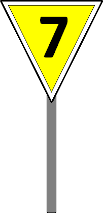
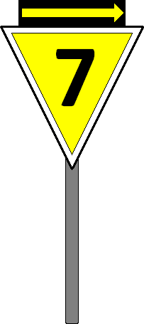

1
Bedeutung
Ein Geschwindigkeitssignal (Lf 7) ist zu erwarten.
Signalbuch-Online



 Aufbau und Verhaltensweisen an dauerhaften und vorübergehenden Langsamfahrstellen.
Aufbau und Verhaltensweisen an dauerhaften und vorübergehenden Langsamfahrstellen.